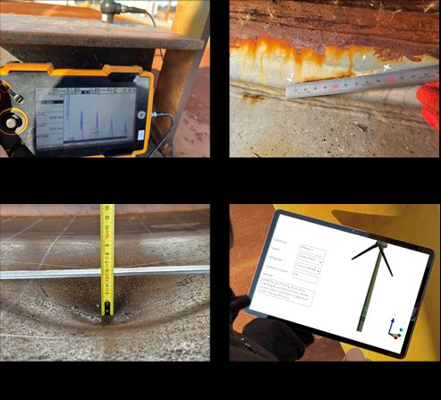

03 / From Research to Field System
Not conceptual — a working digital-twin workflow
The framework is not just conceptual. My work connects field inspection, damage digitisation, model updating, structural simulation, and predictive maintenance into a practical digital-twin workflow for ageing offshore assets.
1
Field inspection
Portable ultrasonic sensing paired with a tablet-based inspection workflow for in-situ damage detection.
2
Damage digitisation
Corrosion wastage, root cracking, and mechanical denting recorded, annotated, and encoded on-site.
3
Digital-twin update
Measured damage geometry feeds a continuously updated digital twin of the structure.
4
Structural simulation
High-fidelity response and limit-state assessment under combined environmental and operational loading.
5
Predictive maintenance
Forecast condition to plan inspection and maintenance before problems become critical.


